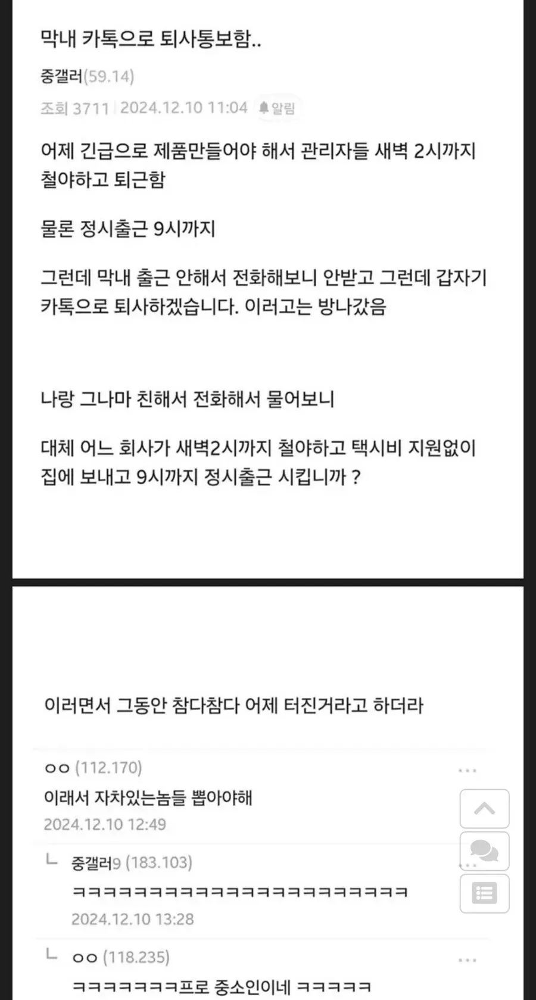

회사 막내 퇴사 썰
댓글
우리회사도 4시까지야근시키고 정시출근시키는데 ㅋㅋㅋㅋ 이딴회사 다니느 내가 레전드. ㅅㅂ 포괄임금재 ㅈ같네
ㄹㅇ 왜 다님?
ㄹㅇ 페이나 다른부분 복지가 존나 좋나보네 ㄷㄷ 그걸 유지하는 회사라는거보면
그거 근무기록 다 보관해놨다가 퇴사할때 특근비 정산해달라고 해라. 포괄이어도 계약시간 초과한 만큼 시급 지급해야함. 거기에 52시간 초과했으면 사장새끼 좋아죽을거임
근무기록 뭘로 보관해용?
업무기록 출퇴근시간표 등등?
핸드폰 위치기록도 인정 됨.
오... 감삼당
확실하게 하려면 회사 시계 사진 찍어두기.
좀 못 믿겠다싶은데 수첩에 근무 시간만 적어도 인정이 됨.
그런 당신을 위한 좆량근로시간제
포괄임금제는 그게 아니여. 포괄은 잔잔바리로 야근하는거 포함하는거지 그렇게 새벽까지 야근하는건 수당 나온다
그냥 배달하거나 편돌이 하는게 돈 더벌거깉은데
포괄임금제는 "근무시간을 특정하는게 물리적으로 불가능"할 정도여야 인정되는거임 좆소가 쓰는 포괄임금제 99%는 그냥 나 법위반이요 하고 있는거니까 출퇴근기록 잘 보관해서 노동청에 신고하면 연장근로 야간근로 휴일근로 퇴직금까지 다받고 추가로 노동법 위반사항 형사처벌 들어가는거 합의금까지 챙겨나올 수 있으니까 참고하도록
그렇게까지 갈 수 있음 ?
우리 최저+월 52H 풀로 땡겨서 계약하고 기본급+잔업비로 구분해서 명세서 보내고 돈도 맞춰서 줌
근무기록 남겨도 어차피 월 50시간 넘는인원 없고
네가 말한거처럼 퇴사한 누군가가 근태 남겨서 고용노동부 찔러서
회사입장 - "52시간 연장한것처럼 급여 지급하고 있으며, 실근무 종합해봐도 전체기간 연장근무 총합이 회사에서 월 52시간 연장근무금액 지급한것보다 작으니 문제 없음" 이라고 하니
고용노동부도 음. 그렇군 ㅇㅋ 하고 끝났는데
독한놈 만나면 문제 되는거임 ?
/ 본문의 포괄임금제 운영 사업장도 어차피 기본 잔업 + a로 깔고서 갈텐데 99% 라는건 어폐가 있지 않나.. 싶어서 몰라서 물어봄
기본비 잔업비 나눠서 주면 포괄임금제가 아님 니 말대로 52시간 안넘기고 연장근로수당 다 지급하면 아무문제 없지 개붕이 좋은데 다녀서 찐 좃소를 못봐서 그래
보통 포괄임금제 한다 하면 기본급에 연장근로수당 전부 포함된다고 하고 실제 연장근로한것보다 적게 주거나, 월 20시간 이렇게 정해놓고 실제보다 적게 줌
이름이 포괄임금인지 갓갓임금인지는 중요하지 않고 실제로 어떻게 근로하고 어떻게 지급하는지가 중요함
참고로 ㅇㅈㄹ하는거 좃소뿐만 아니라 대기업고 많음 그래서 올해 작정하고 패는중
참된 중소인 ㄷㄷ

너 차있어?
근데 진짜 좆소가면 신입한테 차뽑으라고 자꾸 부추김
도망 못가게 해야하니까 ㅋㅋㅋㅋㅋ
노예제조기 새끼덜 ㅂㄷㅂㄷ
새벽2시면 야근이지 뭘 철야야
가공회사 잔업 존나함
발주넣는데서 긴급이나 납기 짧은거 존나 던짐.. 그러면 하청회사는 당연히 된다고 해야되서 받아서 가공하는데 시간 존나걸려서 잔업함 ㅋㅋ
이게싫어서 이쪽계통안함 ㅜㅜ 괜히 이런거 시작했음 나름의 기능직이지만 할게못됨..
부산에 원래 2박3일 일정으로 출장갔었었는데 본사에 다음날에 중요한 일정이 잡혀서 당일치기로 복귀해야하는 날이 있었음..
그게 새벽 4시에 서울 -> 부산 출발해서 출장일 하루만에 다끝내고 부산->서울을 저녁11시에 출발해서 새벽 3시 조금 안되어서 도착했음
다음날 일정때문에 정상출근함 ㅠㅠ
그래도 부서장이 일정 끝내고 조기퇴근 시켜줌.. 근데 전날 뭐 거의 운전포함 23시간일하고 9시에 정출하려니까 사람이 미치긴하더라
배려
내친구들 진짜 .. 평택 안산 같은곳에서 일하는데
대중교통도 없는데 차 끊기는 시간보다 늦게 야근 시켜서 차삼 ㅜㅜ
중소면 그래도 저상황 이해는감 그나마 전부다 야근이아니라 관리자만 했고 다음날 제품 출하며 이것저것 하려면 9시 출근 해야 했을수도 있겠다 싶긴함 근데 급하게 일잡는 윗대가리가 문제지
칫... 노예가 아닌자는 떠나라! 다 필요없다
나도 월요일 오전 5시에 퇴근하는데 오전 9시까지 출근하라 해서 속으료 욕했었는데 ㅋㅋㅋ
ㅋㅋㅋ 진짜? 택시비는 좀 줘야지 넘하네
진짜 ㅈ소는 상상을 초월해
야간근무 새벽 4시까지 하고 집가서 5시에 자는데 담날.. 아니 그날 오후 1시까지 출근하라했던 엔지니어링 회사... 치가 떨린다
댓글보니 이거 주는데가 더많음??
우리는 메이저 공기업인데 안주는데..
지난달 국감땜에 이틀이나 새벽1시 퇴근했는데 당연히 정시 출근이고
정시출근은 뭐 그렇다쳐도 보통 택시비나 수당은 챙겨주지
공기업에 택시비가 어딨어 OT주는거지
물론 OT못받는데도 있긴함
9시출근 새벽 4시퇴근 (택시비지원) 집가서 씻고 잠깐 누웟다가 다시 9시출근
성수기때 주 4회정도 이렇게했는데 철야가없는날은 술없으면 제시간에 잠을못잠ㅋㅋ 같이일하던 대리는 구안와사 와서 퇴사하고 나는 일하다 졸았다고 짤림 씨발 ㅋㅋ

나도 새벽 2시까지 일했는데
다음날9시 출근 시키고 10시에 집감
밤 9시 까지 일하고 퇴근하고 새벽 4시30분 출근후 10시 안되서 집감
댓글이 완성시켰다